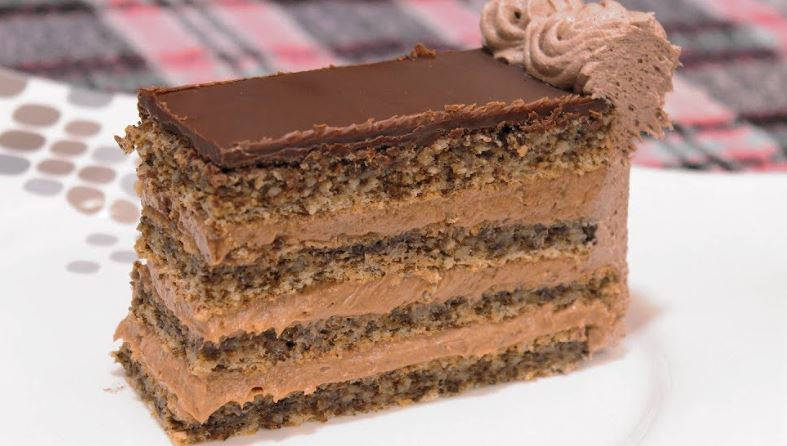

Kora:
Fil :
Kora: Ulupati 8 belanaca, dodati 200 g šećera zatim dodati 200 g mlevenih oraha, izmešati dobro i dodati 3 kašike brašna. Peći.
Fil: 8 žumanaca izmesati sa 200 g šećera. Dodati 4 štangle omeksane šokolade i 200 g umucenog maslaca.
Sve dobro umutiti i kuvati na pari dok se ne zgusne. Prohladiti i ponovo dobro mešati.